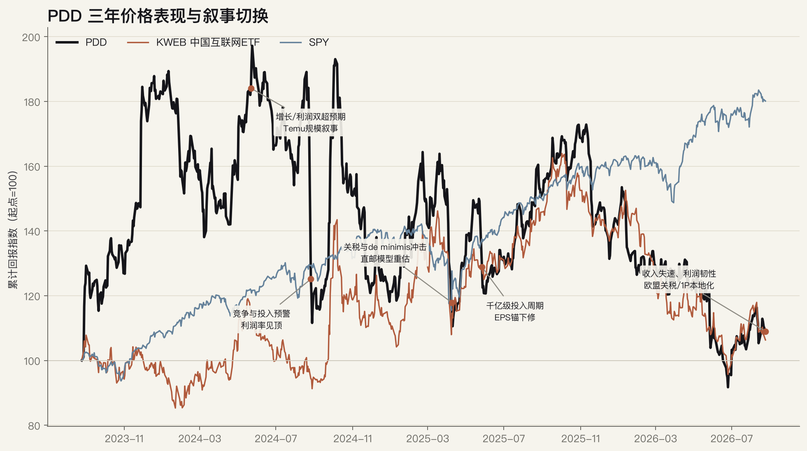
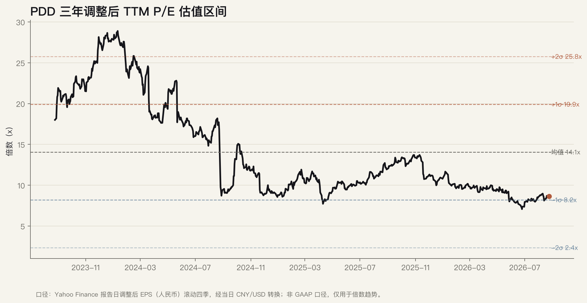
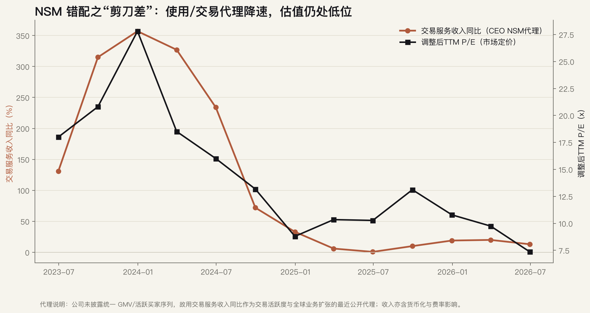

Ticker: PDD
Date: 2026-08-25
Classification: 进入下一阶段研究（条件式优先）
结论：值得进入下一阶段研究，但不是因为“便宜”本身，而是因为市场可能正在用错误的合并利润锚给两个经济阶段不同的资产定价。截至 2026-08-25，PDD 报价 87.07 美元，调整后 TTM P/E 约 8.7–9.0 倍，位于三年均值 14.1 倍下方约 1 个标准差；与此同时，公司持有约 4,564 亿元人民币现金及短期投资。市场把国内主站的成熟现金流、Temu 的制度重置成本、以及未来数年的 1P/供应链投入压缩成一个低个位数至高个位数盈利倍数。[FMP-MKT] [FMP-Q2] [GS-2Q26]
潜在错误锚：合并 P/E 把“Temu 当前亏损与投资”近似永久化，也没有单独检验国内平台的商家 ROI、广告变现与现金生成价值。高盛的 2Q26 SOTP 给国内主站 9 倍 FY26E P/E、Temu 25 倍 P/E（再扣 15%控股折价），目标价 134 美元；摩根士丹利 DCF 目标价 129 美元，而野村/伯恩斯坦的谨慎框架对应 97/110 美元。相对 87.07 美元，卖方结果区间为约 +11% 至 +54%，真正值得研究的是：Temu 本地化与 1P 是否能把制度冲击转化为可持续单位经济，而不是目标价平均数。[GS-2Q26] [MS-INV] [NOMURA] [BERN]
最大反证：Q2 收入仅同比增长 8%，交易服务收入增长 13%且低于预期；国内线上营销收入仅增长约 3%，Temu 的欧洲/拉美流量与交易承压，第一方品牌推进亦慢于管理层预期。若 1P、本地仓配和合规投入只能维持流量、不能改善复购和履约后贡献利润，这不是健康滞后，而是危险分化。[FMP-Q2] [CALL-Q2] [GS-2Q26]
数据截点为 2026-08-25。最新一季电话会已覆盖，但对应 Q2 SEC 财务附件尚未出现在 EdgarTools 检索结果中；播客源因 Podwise TLS 故障不可用。
| Source Category | Latest Source Date | Freshness Status | Age vs. Report Date |
|---|---|---|---|
| 卖方报告 | 高盛 2Q26，2026-08-25 | 当前 | 同日 |
| 财报电话会 | 2026Q2，2026-08-24 | 当前 | 1 天 |
| SEC filings | 财务 6-K：2026-05-28；20-F：2026-04-29 | Q2 待更新 | 财务附件约 3 个月 |
| 买方/运营者观点 | Stratechery，2025-04-30 | 有用但陈旧 | 约 16 个月 |
| 播客/深度讨论 | Podwise 调用失败 | 不可用 | 来源缺口 |
| Item | Latest Situation |
|---|---|
| Market Data & Positioning | 股价 87.07 美元；52 周区间 71.94–139.41 美元；市值约 1,239 亿美元。按 Q2 现金及短投约 635 亿美元粗估、债务近乎可忽略，经济 EV 约 600 亿美元；该口径比部分数据商 EV 更积极，因为把短投视为 excess cash。[FMP-MKT] [FMP-Q2] |
| Key Financial Metrics | 2026Q2 收入 1,124 亿元（+8%）；交易服务收入 547 亿元（+13%）；非 GAAP 经营利润率 26%（同比 -1pct）；非 GAAP 净利润 285 亿元（-13%）；经营现金流 257 亿元。[FMP-Q2] |
| Price Action & Technicals | 近 30 个交易日上涨约 3.8%，但最新价低于 EMA12/26/50；RSI 48.8，MACD 仍为正但低于信号线，布林带宽收窄至 9.4。技术面为中性偏弱、未超卖；股价仍低于 200 日均线约 13%。[TECH] |
| Positioning | FMP 的 13F 口径显示 2026Q2 持股比例由 29.7%升至 32.4%、持股数增加约 9%，但机构数下降、减持/清仓机构增加；ADS 换算口径限制精度，仅采纳方向。外国发行人没有可比的实时 Form 4 内部人交易覆盖。[FMP-MKT] |
| Key Metric | Value | Implication |
|---|---|---|
| 交易服务收入同比 | +13% | Temu/交易活跃代理仍增长，但从 2023–24 年三位数增速显著降档，且低于市场预期。 |
| 线上营销收入同比 | 约 +3% | 国内 GMV/商家广告 ROI 尚未证明再加速，是国内现金牛估值能否守住的核心。 |
| 现金及短期投资 | RMB 456.4bn | 为 1P、供应链和合规转型提供缓冲；但管理层没有分红计划，现金折价取决于资本配置纪律。 |
| 调整后 TTM P/E | 约 8.7–9.0x | 明显低于三年均值；便宜既反映中国/治理折价，也反映 Temu 与投资周期的不透明。 |
主锚是 FY26/27 非 GAAP P/E，而不是 EV/GMV。FMP FY26 一致预期收入约 4,842 亿元、EPS 69.50 元；高盛在 Q2 后的更低预测为收入 4,581 亿元、EPS 64.64 元。按约 7.2 人民币/美元，当前价对应 FY26E P/E 约 9.0–9.7 倍，意味着市场只愿为当前盈利的维持付费，几乎不给 Temu 成熟价值、国内再加速或现金再配置溢价。[FMP-EST] [GS-2Q26]
这个锚可能正确：Temu 的直接邮寄套利被美国/欧盟制度变化削弱，本地仓配和 1P 会提高资本、库存和执行复杂度；公司又不披露 Temu 分部 GMV、贡献利润、CAC 或复购。因此，低 P/E 不是天然错误，而是对不可验证性的定价。错价成立必须看到“投入 → 合规本地供给 → 复购/商家 ROI → 贡献利润/现金”的证据链闭合。
| Company | Market Cap | TTM P/E | EV/EBITDA | Latest Rev. Growth | TTM Op. Margin |
|---|---|---|---|---|---|
| PDD | $124bn | 8.4x | 4.6x | +8.0% | 22.2% |
| Alibaba | $284bn | 25.2x | 15.9x | +10.2% | 4.2% |
| JD.com | $41bn | 18.0x | 10.5x | +10.1% | 0.2% |
| MercadoLibre | $99bn | 53.0x | 34.9x | +15.0% | 8.3% |
| Sea | $69bn | 42.7x | 24.5x | +9.7% | 8.0% |
来源：FMP，检索日 2026-08-25。跨公司会计、业务组合、现金处理与地域风险差异很大；表格只证明 PDD 折价显著，不证明折价必然收敛。
价格图显示 PDD 在 2024 年增长叙事顶峰后持续跑输 SPY；估值图显示倍数从 20 倍以上压缩至约 9 倍。第三张图使用“交易服务收入同比”作为 CEO NSM 的最近公开代理，因为公司不披露统一 GMV/活跃买家序列；该代理同时受货币化和费率影响，不能等同真实用户价值。



| Lens | Assessment |
|---|---|
| CEO NSM | 可负担价格下的有效交易与履约体验。理论指标应是净成交/复购/履约成功；因未披露，当前用交易服务收入增速与流量数据作不完美代理。 |
| Long-term investor | 商家 ROI 与履约后贡献利润转化为可持续 FCF。具体观察广告渗透、商家留存、Temu 本地履约单位成本、复购和自由现金流质量。 |
| Market-consensus | FY26/27 EPS、交易服务收入增速与 Temu 亏损。市场短期奖励利润超预期，但更惩罚收入/交易服务失速与监管冲击。 |
| Mismatch category | 混合诊断：国内主站为“健康滞后候选”，Temu 为“危险分化待排除”。只有本地化投入带来复购、商家 ROI 和贡献利润改善，整体才可升级为健康滞后。 |
极致性价比与丰富供给 → 更高购买频次与净成交 → 商家订单密度/库存效率改善 → 商家更依赖平台获客与履约 → 广告与服务付费意愿上升 → 本地仓配规模经济与贡献利润改善 → 可持续自由现金流
以卖方公开目标价作结果区间而非内在价值定论：野村 97 美元约对应 +11%，伯恩斯坦 110 美元约 +26%，摩根士丹利/高盛 129–134 美元约 +48%至 +54%。若基本面继续下修，52 周低点 71.94 美元提供一个可观察的市场压力位，约 -17%；这形成表面约 3:1 的上行/下行比。但若监管、本地履约或国内货币化结构性恶化，历史低点不是基本面地板。
Classification: 进入下一阶段研究（条件式优先）。
| Advancement Gate | Assessment | Why |
|---|---|---|
| Wrong anchor | 通过，但未证实 | 合并 P/E 可能把 Temu 的过渡投资当成永久拖累，并低估国内现金牛；但分部披露缺失使折价有合理性。 |
| Material upside | 通过 | 可信多头框架对应约 48%–54%上行，超过仅由轻微预期差造成的波动；保守目标仅约 11%，分歧足够大。 |
| Clear validation path | 通过 | 未来 2–4 季可由交易服务/OMS增速、Temu欧洲恢复、本地履约成本、1P进度、经营现金流和管理层披露验证。 |
因此 PDD 达到 SitRep advancement standard：错价假设可成立、上行足以影响组合、且存在可证伪的数据路径。下一阶段目标不是立刻建立仓位，而是把国内主站和 Temu 拆开建模，并证明 1P/本地化投资的单位经济。证据置信度：中高；承保状态：初步 underwrite，可进入深挖，尚不足以形成目标仓位。